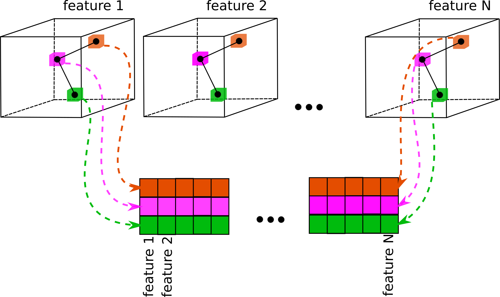
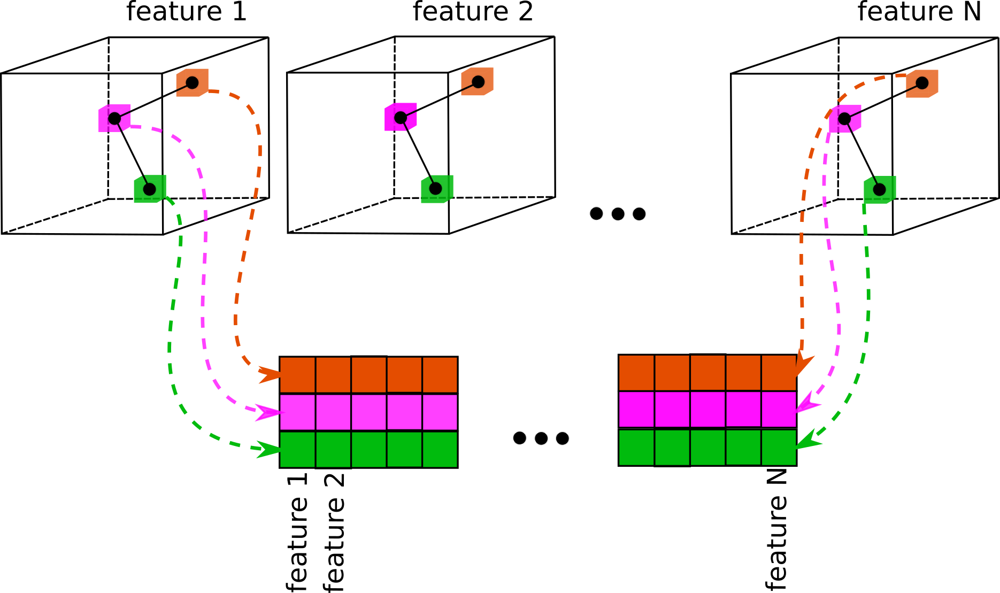

Volume
This module contains layers working with volumetric representation of proteins.
Computes the 3D atomic densities of each atom type. Let's denote the position of the $j$-th atom of type $i$ as $\mathbf{x}_{ij}$.
The volumetric density for atom type $i$ reads:
$$
V_i(\mathbf{r}) = \sum_j \exp\left( -\frac{|\mathbf{r} - \mathbf{x}_{ij}|^2}{2\sigma^2} \right)
$$
The value of $\sigma$ is set to 1 grid unit. To reduce the amount of computation,
the contribution of each atom is considered only up to 2 grid cells away from its position.
Input/Output
Example
import torch
from TorchProteinLibrary import Volume, FullAtomModel
import _Volume
import numpy as np
import matplotlib.pylab as plt
import mpl_toolkits.mplot3d.axes3d as p3
if __name__=='__main__':
a2c = FullAtomModel.Angles2Coords()
translate = FullAtomModel.CoordsTranslate()
sequences = ['GGMLGWAHFGY']
#Setting conformation to alpha-helix
angles = torch.zeros(len(sequences), 7, len(sequences[-1]), dtype=torch.double, device='cpu')
angles.data[:,0,:] = -1.047 # phi = -60 degrees
angles.data[:,1,:] = -0.698 # psi = -40 degrees
angles.data[:,2:,:] = 110.4*np.pi/180.0
#Converting angles to coordinates
coords, res_names, atom_names, num_atoms = a2c(angles, sequences)
#Translating the structure to fit inside the volume
translation = torch.tensor([[60, 60, 60]], dtype=torch.double, device='cpu')
coords = translate(coords, translation, num_atoms)
#Converting to typed coords manually
#We need dimension 1 equal to 11, because right now 11 atom types are implemented and
#this layer expects 11 offsets and 11 num atoms of type per each structure
coords = coords.to(dtype=torch.double, device='cuda')
num_atoms_of_type = torch.zeros(1, 11, dtype=torch.int, device='cuda')
num_atoms_of_type.data[0,0] = num_atoms.data[0]
offsets = torch.zeros(1, 11, dtype=torch.int, device='cuda')
offsets.data[:,1:] = num_atoms.data[0]
#Projecting to volume
tc2v = Volume.TypedCoords2Volume(box_size=120)
volume = tc2v(coords, num_atoms_of_type, offsets)
#Saving the volume to a file, we need to sum all the atom types, because
#Volume2Xplor currently accepts only 3d volumes
volume = volume.sum(dim=1).to(device='cpu').squeeze()
_Volume.Volume2Xplor(volume, "volume.xplor")
Extracts local features from a set of volumes based on the atomic coordinates, scaled according to
proportion of initial volume size (box_size_bins) and current volume size (box_size_ang).
This process is illustrated on the image below:

In version 0.1 of the library, this layer is not differentiable.

In version 0.1 of the library, this layer is not differentiable.
Input/Output
Computes the correlation between two sets of volumes of the same size. Let's denote
feature $i$ volume as $V_i$. The correlation between two sets of volumes is:
$$
Corr_i = (V^{(1)}_i * V^{(2)}_i)
$$
where
$$
(V^{(1)}_i * V^{(2)}_i) (x,y,z) = \sum_{klm} V^{(1)}_i (k,l,m) V^{(1)}_i (k+x,l+y,m+z)
$$
We will denote the translation of the second volume wrt the first as $\vec{\tau} = (x, y, z)$